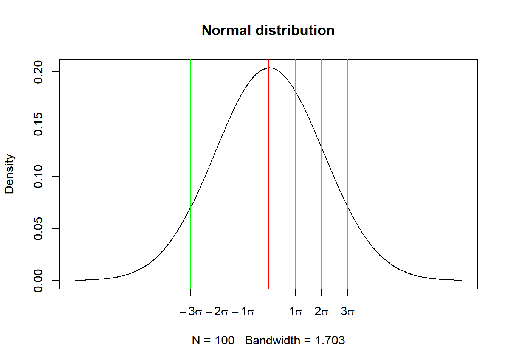
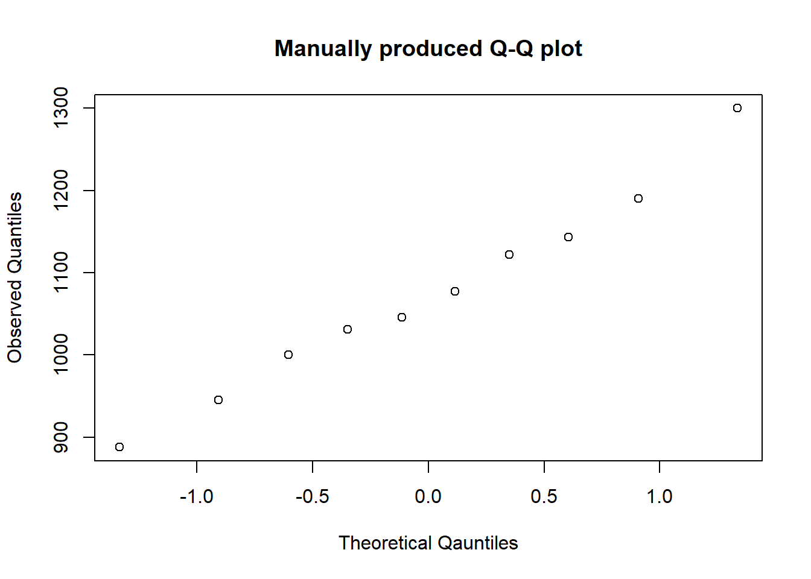
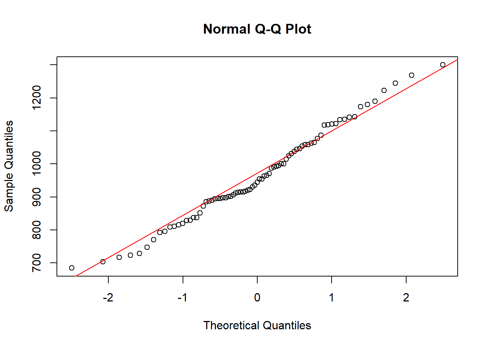

The previous section in this website introduced you to summary statistics. Examining these in R allows you to make early descriptions of your data. The data featured below shows 99 randomly generated numbers between 1 and 64 using the runif(...) function:
Code
set.seed(12)some_data <-runif(n =99, min =1, max =64)print(some_data)
The runif(...) function is interpreted as random uniform data. It’s arguments are:
n: The number of observations
min: The minimum value for the data range
max: The maximum value for the data range
The set.seed(...) function calibrates the random number generator state. In other words, it ensures that same values are present if ran on another computer.
To find the average number from this series, the function mean(...) can be used on the data. For example:
Code
mean(some_data)
[1] 31.30861
There are various classical measures used in statistics to describe data and these will be discussed in this section. These include averages, central tendency, variability, scatter, and variation.
Traditionally, when data is first received, a good first step is to exam its shape (or distribution). Doing this develops an understanding of whether the data features a mostly high, low, or middle data values. A method of visualising this in R is the Tukey’s Stem and Leaf plot (1977). This can quickly produced in R using the stem(...) function. Applied to the random numbers generated above, the process and result are as follows:
Tip
In the stem(...) function, x = is used to refer to the data vector. This is typically the case in R and most of its packages when dealing with a string of values.
Code
stem(x = some_data)
The decimal point is 1 digit(s) to the right of the |
0 | 22344577789
1 | 011111223355668888
2 | 0111134445555556668899
3 | 0234556667789
4 | 111333556668899
5 | 01122233446677
6 | 001233
Essentially, the plot above is using all of the recorded values by their whole number to the left of the bar |; to the right of the bar are first decimal places of each occurrence. For example, the first row shows: 0 | 1234555666799, this translates to the following sequence of decimal numbers:
Therefore, From the data distribution, its quickly obvious that there is a peak at in observations with values ranging between 20-29.
1.1 The median
From the stem and leaf plot featured in Section 1, it is possible to calculate the middle point of the data known as the median. Equation is as follows:
Here, \(\mu\) represents the median (the value), \(X\) is the ordered list of numbers (as featured in the Stem and Leaf plot), \(n\) is the number of observations.
The process is involves counting the number of observations plus 1 and dividing that number by 2. The data we’ve been examining so far has 99 observations (\(n\) = 99), so we can begin to solve the equation:
Therefore, at our 50th observation, we’ll find our median. Doing this from the Stem and Leaf plot in Section 1 gives us the value of approximately (~) 20.9. However, with R, we can obtain a more precise figure using the median(...) function. For example:
Code
median(x = some_data)
[1] 28.67806
Tip
Calculating the median by hand for even data…
The \(\mu\) process above works well with an odd number of observations. However, it differences slightly when dealing with an even number of observations, where the equation becomes (\(\mu'\)):
That is to say, you first need to find the divide your the number of your observation into two and add that value to your previous previous result with an additional unit. This is then divided into two. For 100 observations:
The median will lie between the 50th and 51st observations. In R, the median(...) function works for both even and uneven vector sizes.
1.2 Comparing distributions
There may be instances, where you’d want to compare distributions. For example, One set of randomly regenerated data vs. another. As R isn’t able to do this on its own, this process can be achieved by using the stem.leaf.backback(...) function from the aplpackpackage.
Let’s use it to compare the results of two randomly sampled data values (\(n\) = 99) for set at different seeds…
Code
# To load the package in R type...chooseCRANmirror(ind =68)if(!require(aplpack)) install.packages("aplpack", dependencies =TRUE)# Calibrating the comparative dataset.seed(13)more_data <-runif(99, min =1, max =64) # rendering the resultstem.leaf.backback(x = some_data, y = more_data)
The results are a little more complex but consistent with Tukey’s notation (1977), where he describes the process as scratching down numbers, to get a feel of what they like (ibid.). Here is single (*) is a one-digit leaf - a single decimal point - for the starting half of rounded numbers: .0 - .4; the (.) cover the remaining half of the rounded values: .5 - .9. these are the extreme columns are the sum totals towards the median of the data for each row of observations (left and right). Again, this gives a good indication distribution’s shape. Here, We can see the medians differ slightly for each vector. For ‘some_data’, the median is median(some_data), for ‘more data’, median(more_data). From the graphic, we learn that these figures can be found at around the 11th observation of the range of 25-29 (.) for ‘some_data’, while the median is located at 4th count of the of the range between 30 and 34 (*). Towards the bottom, are are the total number of observations for each variable.
1.3 When to use a Stem & Leaf plot
You will find it appropriate to use a Stem & Leaf plot when you need to:
Quickly determine the frequency of an observation
Quickly order the observations in your data.
Quickly visualise the distribution of your data
Quickly make and report on findings while in the field
Require more information than a what is present on a histogram.
Reminder on loading packages
The first line of code chooseCRANmirrow(ind = 68) specifies where the package will be downloaded from. CRAN stands for the *Comprehensive R Archive Network, and the mirror is the exit-node you’ll be using. There are over 100 mirrors, but I normally settle on 68th index (ind) by habit; if you cannot find you package, you should consider changing the ind value.
The second line of the code actually loads the package. Conventionally, you can load a package by typing the following into a blank script.
We’ll revisit R packages in a later section of this website.
It’s worth noting that Stem & Leaf plots can be used with time series and non-numeric data but for the purposes of this tutorial, we’ll stop at it’s simple application on numerical vectors.
1.4 Central Tendency
When examining distributions we are immediately drawn to its shape, where peaks indicate higher numbers of frequencies. The best known measure is the median, followed by the arithmetic mean and the mode. The median, mode and mean are particularly useful in describing the shape of a distribution without a graphic aid.
When the mean has a greater value than a median (and/or the mode is less than the median), the shape of the distribution is positively skewed; the distribution has a tail towards the right.
When the mean is less than the median (and/or the mode is greater than the median), the shape of the distribution is negatively skewed, with a long tail to the left.
When the mean, mode, and median are aligned, the shape of the distribution is symmetrical.
Figure 1: Positve and negative skews generated by random beta distributions. Median is red while the mean is shown by a blue dashed line
1.4.1 Gaussian normal distributions
A symmetric, bell-shaped distribution with a single peak. An example can be simulated using the rnorm() function. This function returns a random numerical vector with properties that form to a Gaussian normal distribution Figure 2.
Code
set.seed(13)# Generating the distribution...norm_dist <-rnorm(100, mean =10, sd =1)# Plotting the result...plot(density(x = norm_dist, adjust =5), main ="Normal distribution")abline(v =median(norm_dist), col ="red")abline(v =mean(norm_dist), col ="blue", lty =2)legend(14, 0.15, legend =c("Median","Mean"),col =c("red","blue"), lty =1:2)
Figure 2: ?(caption)
Under these conditions you are able to apply a range of probability analyses, working with skew data posses limitations in this regard, where researchers often strive to convert their data to this distribution by either removing outliers or by transforming its values - a process discussed much later on.
1.4.2 Dealing with outliers
Outliers in a variable are observations that are considered extreme. They are exceptionally high or exceptionally high relative to the rest of the data present, specifically the interquartile range hinges (Tukey 1977). Conventionally, they can play a role in Centrality of a distribution, where removing them could aid in the reliability of your analysis. They can be conventionally detected by applying Equation 5 to find lower outliers and Equation 6 to find higher outliers.
\[
LO = Q1 - (1.5 \times IQR)
\tag{5}\]
\[
HO = Q3 + (1.5 \times IQR)
\tag{6}\]
Outliers are typically depicted in box whisker plots, where in R it is possible to retrieve numerical values using the boxplot.stats(...) function to access the metadata behind the plot. Let’s apply this function to some data concerning the distribution of Christians in Thanet, South East England.
Code
# Acquiring the data...Thanet_religion <-read.csv("https://raw.githubusercontent.com/Richtea84/I2Q-files/main/Thanet.csv")# Box whisker plot for the region's Buddhists...boxplot(x = Thanet_religion$Christian, horizontal =TRUE,col ="palegreen")
Distribution of Christians in Thanet
When the boxplot.stats(...) function is applied, the following result is rendered:
The stats are, in order, the extreme value of the lower whisker, the lower ‘hinge’ where the first 25% of the observations fall, the median, the upper hinge where the last 25% of the data falls, and the extreme of the upper whisker
n is the size of the same. In Thanet, there are 84 lower super output areas
conf are extremes of the confidence interval (at 95%). Confidence intervals are discussed later on.
out returns values that are beyond the extreme whiskers. These are the outliers.
To isolate the outliers, the code is as follows:
Code
boxplot.stats(Thanet_religion$Christian)$out
[1] 1515 594 1363 1478 1386
To remove these outliers from the data frame, you can use the which(...) function in R. This is how it is applied to the Thanet data:
Code
# Number of rows in original Thanet dataprint(paste("Number of rows in the original Thanet data set = ",nrow(Thanet_religion),sep =""))
[1] "Number of rows in the original Thanet data set = 84"
Code
# Storing the identified outliersOutliers <-boxplot.stats(Thanet_religion$Christian)$out# Removing the outliersThanet_NO <- Thanet_religion[-which(Thanet_religion$Christian %in%c(Outliers)),]print(paste("Number of rows in the adjusted Thanet data set = ",nrow(Thanet_NO),sep =""))
[1] "Number of rows in the adjusted Thanet data set = 79"
In essence, the which(...) function returns a position that is based on a condition; data which can be described in a certain way. Here, it is being used to slice the Thanet_religion data frame to find the number of Christians that are considered outliers. Specifically, -which(...) is being used to invert the process, so that we are finding all of the records that are not considered outliers.
Tip
Remember that the $ operator is used to access lists within a data frame. I works in similar way to square brackets [] that can also be used when slicing a data frame. The $ cannot be used to slice a matrix.
The %in% operator in R pushes code from one process to another. In the Thanet example above, the Christian data is being pushed into a concatenated list of outliers.
The distribution of Christian in Thanet can be seen in Figure 2. The distribution shows a visible positive skew. This is confirmed by mean value being greater than the median value. In Figure 3, the symmetry of the distribution appears to have improved, but a positive skew is still detectable; the difference between the mode and median has reduced, a significant outcome that will play a role in later analyses.
Code
hist(Thanet_religion$Christian, col ="palegreen",main ="Original Data", xlab ="No. of Christians", xlim =c(300, 1700))abline(v =median(Thanet_religion$Christian), col ="red")abline(v =mean(Thanet_religion$Christian), col ="blue", lty =2)legend(1400, 15, legend =c("Median","Mean"),col =c("red","blue"), lty =1:2)
Figure 3: ?(caption)
Code
hist(Thanet_NO$Christian, col ="palegreen",main ="Adjusted Data", xlab ="No. of Christians", xlim =c(300, 1700))abline(v =median(Thanet_NO$Christian), col ="red")abline(v =mean(Thanet_NO$Christian), col ="blue", lty =2)legend(1400, 15, legend =c("Median","Mean"),col =c("red","blue"), lty =1:2)
Figure 4: ?(caption)
1.4.3 The trimmed mean
Let’s a imagine a situation where outliers cannot be removed or, when they are, no difference is made to the distribution of the data. Your mean average is affected by this situation. An option is to trim the mean, where the contents of the variable are sorted into a numeric order and a portion sliced off (see Equation 7)
In Equation 7, \(p\) refers to the portion. Where the we are generating an average for section of data where the last portion has been removed (\(n-p\)); the indexing duly states that the starting point relative to the index is the original value plus the proportion. The result is a trimming of the variable.
To work out the estimate, the trimmed sample must be divided by the size of the trimmed sample from both ends: \(n-2p\).
Calculating the trimmed mean is fairly straightforward in R by adding the trim = argument to the mean(...) function. Here the trim is the desired proportion. Entering a value of 0.25 will remove the top and bottom 25% of the data’s observations. Let’s try this with our Thanet data, this time looking at the number of Muslims.
Code
mean(x = Thanet_religion$Muslim, trim =0.25)
[1] 11.47619
The original mean is 14.6428571.
As with the removal of outliers, the context underwhich you will trim the mean depends on the specifics of your analysis and the shape of the data concerned.
1.5 Spread
The spread of a sample’s distribution is determined by how far the values within a distribution deviate from the sample’s mean (\(\bar{x}\)). Standard deviation is a standardisation of variance, but what do we mean by variance.
1.5.1 A description of variance
Sample variance in essence are an index of values and their distance from a sample mean. Its mathematical symbol is \(\sigma^2\). It’s formula is as follows:
In essence, what we are doing is finding the total numerical distance of each observation within of a sample \(x\) from the sample’s mean \(\bar{x}\). For our sample, we need to find the total sum of squares (\(TSS\), see Equation 9). The reason for the power function is to remove the negative signs that will return erroneous results.
The final stage of the equation (as shown in Equation 8) is to divide the observations by the number of observations in your sample, resulting in an average. Note the use of \(n-1\) instead of just \(n\); this indicates the number of independent observations that are able to vary. A sample of 100 observations is able to vary up to its 99th observation where, at the 100th value, variance is lost. \(n-1\) is referred to as the sample’s degree’s of freedom (\(\nu\) or ‘df’).
1.5.2 Standard deviation as measure of spread
While variance (\(\sigma^2\)) gives us an indication of differences of values from the mean, the problem is that its result is too large to relate directly back to the original sample. To address this issue, we introduce a square root function to the overall equation so that \(\sigm^2\) becomes \(\sigma\). The equation is as follows:
When this figure is calculated, we are able to determine the spread of a distribution given the standard deviation of observations from the sample’s overall mean (see Figure 5).

Figure 5: Example of normal distribution with the number of standard deviations.
Calculating the standard deviation of a vector (or variable) is straightforward in R via the sd(...) function. Let’s use the sd(...) function to work out the spread of a randomly generated distribution.
Code
set.seed(45)pos_dist <-rbeta(100, 1, 10)st_dev <-sd(pos_dist)plot(density(pos_dist, adjust =5), main ="Postive skew")abline(v =mean(pos_dist), col ="blue", lty =3)abline(v =mean(pos_dist)+st_dev, col ="green")abline(v =mean(pos_dist)-st_dev, col ="green")
Figure 6: Random distribution showing the mean (blue dashed line) and standard deviation range (green lines)
Based on this example we can see that most of the standard deviation of our sample’s is ~0.08 on either side of the mean, giving us further insights regarding our data distribution in addition to there interquartile range, mode, mean, and medians.
1.6 Probability functions
Probability relates to the chance of something happening. When it comes to statistics, probability functions can tell us the likelihood of observing particular results from our data variable.
Probability functions are most accurate when data is normally distributed. Eyeballing graphs or considering marginal differences between the mean, mode, and median can give an indication of normality, however, there are specific tests that can help us to readily identify whether or not a variable is normally distributed.
1.6.1 Z-scores
A useful aid in probability analysis are Z standard scores (or Z-scores). In itself, a z-score is useful for calculating how many standard deviations an observation is from its sample mean. These are calculated by subtracting an obsevation (\(x\)) from its sample mean (\(\mu\)) and dividing the result by its the sample standard deviation (\(\sigma\)) see Equation 10.
\[
Z = \frac{x-\mu}{\sigma}
\tag{10}\]
Calculating Z-scores in R is relatively straight forward using the mean(...) and sd(...) functions. To work out the z-scores for Christians in the first 10 Thanet_NO data observations, we can use the following code:
The process for calculating Z-scores in R is rather extrpolated. If you wanted to reduce the inputs, you can consider building you own user defined function. This is enabled using the the function(...)function in R. function(...) only requires vector(s) for input(s), where the curly braces define the treatment of your defined vector/input. the formula. To build a custom process for Z-scores, the process is as follows:
Code
z_scores <-function(x){ result = (x -mean(x))/sd(x)return(result) }
When this custom function is applied to our data, the results are as follows:
In addition to histograms and KDE plots, Quantile-Quantile (plots) are able to indicate whether or not data is normally distributed. In essence, it is a 2-dimensional plot that compares observed quantiles (\(y\)) with theoretical quantiles (\(\hat{y}\)).
Theoretical quantiles are derived from Z-scores for both your data and those found in an equivalently sized standard normal distribution. To calculate this you’ll need to work out the proportion for each observation’s Z-score. To do this, divide the values by the number of observations. As we’re dealing with variance, we subtract 1 from each half of the fraction \(p = \frac{x-1}{n-1}\). For demonstration purposes, let’s construct a data frame for the first observations noted above:
Code
data <-sort(head(Thanet_NO$Christian,10))z_scores <- (data -mean(data))/sd(data)z_scores <- (as.data.frame(z_scores))# Simpler header...names(z_scores)[1] <-"Sorted Z-scores"# Proportionality...z_scores$Prop <-1:nrow(z_scores)/(1+nrow(z_scores))z_scores$Prop <-round(z_scores$Prop,4)names(z_scores)[2] <-"Proportion"# Preview the results...knitr::kable(t(z_scores))
Sorted Z-scores
-1.543638
-1.071096
-0.615134
-0.3581373
-0.2337841
0.0232126
0.3962723
0.5703669
0.960007
1.871931
Proportion
0.090900
0.181800
0.272700
0.3636000
0.4545000
0.5455000
0.6364000
0.7273000
0.818200
0.909100
Using these proportions, you are able to retrieve equivalent Z-scores from a normal distribution (i.e. your theoretical quantiles). In R, this can be achieved by generating a similarly sized random distribution and querying it with the qnorm(...) function that relies on a standard normal distribution. Here:
p = will be the Proportions we’ve just calculated
mean = will be 0
sd = will be 1
The result can be previewed using the plot(...) function.
Code
z_normal <-qnorm(p = z_scores$Proportion, mean =0, sd =1)plot(x = z_normal, y = data, xlab ="Theoretical Qauntiles", ylab ="Observed Quantiles",main ="Manually produced Q-Q plot")

Figure 7: ?(caption)
In practice, you’d use the qqnorm(...) function instead, where you merely supply the \(y\) variable you are interested in. In practice is a good idea to include the predictor line in such a plot. This can be achieved using the qqline(...) function and supplying the same arguments (see Figure 7).
Code
qqnorm(y =head(Thanet_NO$Christian,10))qqline(y =head(Thanet_NO$Christian,10), col ="red")
Figure 8: ?(caption)
When the points fall along the line of a Q-Q plot, a normal distribution is present in the data sample. A Q-Q for all of Thanet’s Christians in 2011 (excluding outliers) can be seen in Figure 8. The points loosely follow the trajectory of the line and approximate normalcy can be argued.
The skewness of a distribution can also be ascertained from a Q-Q plot. When the points fall away from the line towards the negative numbers, then we have a negative skew; a positive skew occurs when the points move away from the line as the quantile values increase.
Code
qqnorm(Thanet_NO$Christian)qqline(Thanet_NO$Christian, col ="red")

Figure 9: ?(caption)
1.6.3 The Shapiro-Wilk test
A reliable way to test for normality prior to using probability functions is the Shapiro-Wilk test. For reference, it’s equation is as follows:
An easy way of thinking about Equation 11, is as a precise ‘fit’ coefficient statistic for a Q-Q plot. The top half of the equation squares the sum of normal value that has been matched against its ordered x equivalent. This is in turn divided by the sum of squares that returns the \(W\) statistic.
In essence, the \(W\) statistic tells us how closely our distribution’s shape aligns to a normal distribution. Once can argue that a value that is >0.5 can be considered normal, however, using this statistic alone will mean that a value of \(W = 1\) will be the only confirmation of normalcy in the data distribution.
Let’s go back to our value 0.5 (let’s call it \(W'\)), and assume that we can see that the distribution appears normal by looking at either the distributions histogram or Q-Q plot, the only way we can confirm normality is by examining the likelihood of seeing this statistic against its critical value within a predetermined confidence interval. Consider ‘Table 2’ from the following web resource: https://real-statistics.com/statistics-tables/shapiro-wilk-table/. For a sample with 10 observations, at 95% confidence (an alpha of 0.05), the critical value is ~0.842. As our value of \(W' < W\), we conclude that our distribution does not conform to a normal distribution.
We can easily perform this test in R using the shapiro.test(...) function. This function is particularly useful as it matches the resulting \(W\) statistic against a probability value. However, the understanding is that if your p-value is less than a predetermined confidence interval’s , then the null-hypothesis is rejected where normalcy cannot be confirmed. If it is above the , then we can assume normalcy and consider the data as parametric.
Let’s apply a Shapiro-Wilk test to our Thanet data (Christians).
Code
shapiro.test(x = Thanet_NO$Christian)
Shapiro-Wilk normality test
data: Thanet_NO$Christian
W = 0.98525, p-value = 0.498
From this result it is apparent that the \(W\) value is quite high at 0.99, the p-value is also above an of 0.05 (0.5). Therefore we can conclude that the distribution is normal. Let’s consider the Muslim population:
Code
shapiro.test(x = Thanet_NO$Muslim)
Shapiro-Wilk normality test
data: Thanet_NO$Muslim
W = 0.84917, p-value = 1.744e-07
Again, the \(W\) value suggests a normal shape to our distribution, but the p-value is less than an of 0.05 (0.0000001743786). We conclude that the data here is not normally distributed (or nonparametric).
Note
In R Shapiro-Wilk tests can be applied to up to 5,000 observations. Larger sample sizes will not compute because of limitations in the synthesis of critical values associated with the principle method.
1.6.4 The Anderson-Darling test
If you found yourself in a situation where you are not fully convinced by the results of your Shapiro-Wilk test, an alternative is the Anderson-Darling test.
This goodness-of-fit test is based on mathematical integration for two distributions:
in Equation 12, \(F_n(x)\) is the empirical distribution and \(F(x)\) is the reference distribution (Anderson and Darling 1954). Effectively, for an number of observations along a distribution and its respective cumulative equivalent, you are 1) subtracting the values of the reference distribution from your observed distribution and dividing the value by the reference distribution (multiplied by its degrees of freedom). This result is then multiplied by degrees of freedom for your number of observations \(dF(x)\). Again, this statistic is compared against a critical value to determine normalcy. If the value is above the critical value, normalcy can be assumed; if below, then normality can be rejected.
Helpfully, there is a package in R that does the hard work for us called nortest. Below is how it can be applied to confirm the non-normal distribution of Thanet’s muslim population.
Anderson-Darling normality test
data: Thanet_NO$Muslim
A = 3.6933, p-value = 2.673e-09
In the result, p-value is interpreted in the same way as for a Shapiro-Wilk test. That is, as it is below an \(\alpha\) of 0.05, we conclude that the difference between the distributions is statistically significant, where we can conlcude that the distribution is not normal.
Note
To my knowledge, there is no maximum number of observations that can be applied to a Anderson-Darling test. However, it is generally advised that it be applied to a minimum of 20 observations.
1.6.5 The Kolgomorov-Smirnov Test
An alternative to the Anderson-Darling test is the Kolmogorov-Smirnov test. The advantage here is that you are able to compare your distribution to other theoretical data distribution including the normal distribution, Poisson distribution and binomial distribution.
This is particularly powerful when determining your instruments for analysis and overall methodical approach going forward.
The critical statistic for this test is \(D\) (distance), indicating how far your sample is from another distribution. It is calculated in the following way:
\[
D = max | F_o(x)-F_r(x)|
\tag{13}\]
Conceptually, the \(F_o(x)\) is a cumulative frequency distribution of sample of observations; \(F_r(x)\) is the theoretical frequency distribution. You can be more specific with \(F_o(x)\) by taking the number of observations that are above a given value (slicing), and dividing these by total number of observations. In theory you can match your sample against other theoretical distributions such as Poisson or Binomial.
In R, implemented a Kolmogorov-Smirnov test is relatively straightforward with the ks.test(...) function. Let’s use it to check the normalcy of the distribution for Thanet’s muslims:
Code
ks.test(x = Thanet_NO$Muslim, y ="dnorm")
Warning in ks.test.default(x = Thanet_NO$Muslim, y = "dnorm"): ties should not
be present for the Kolmogorov-Smirnov test
Asymptotic one-sample Kolmogorov-Smirnov test
data: Thanet_NO$Muslim
D = 1, p-value < 2.2e-16
alternative hypothesis: two-sided
The argument x = specifies the location of our observations (data) while the y = argument indicates the reference distribution. In the example featured above, we are looking at the normal distribution as rendered by R itself (dnorm).
Here, the \(D\) value is quite high, indicating a greater distance of an observation from its matched distribution. The low p-value confirms that the distribution of our data does not fall within a normal distribution.
This test is best suited for larger data sets and is prone to return erroneous results (Type-I and Type-II errors) when examining smaller samples. Use with caution and critically evaluate the results!.
References
Anderson, Theodore W, and Donald A Darling. 1954. “A Test of Goodness of Fit.”Journal of the American Statistical Association 49 (268): 765–69.
Tukey, JW. 1977. “Exploratory Data Analysis. Addison-Wesley, Reading, MA.”Exploratory Data Analysis. Addison-Wesley, Reading, MA.